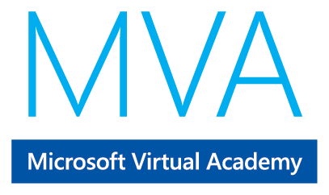
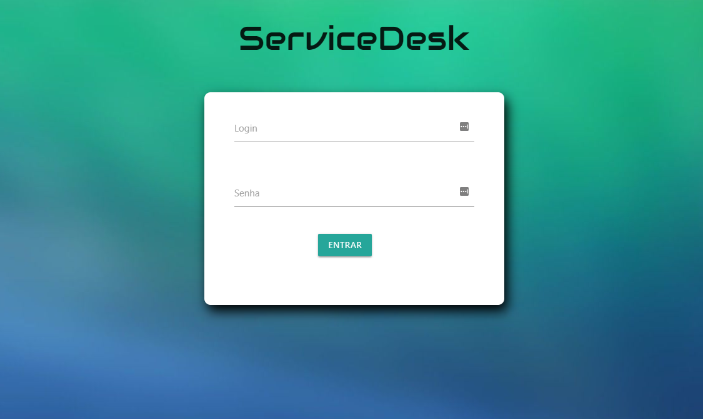

-
assignment_ind Sobre mim
Meu nome é Luan, tenho atualmente anos.
Em 2014 iniciei meus estudos e trabalhos na área da tecnologia. Atuei na area de Suporte auxiliando lojas na instalação de sua ferramenta transacional e na integração com PDVs.
Em 2015 tive a oportunidade de me desenvolver na área de Produção e Monitoramento realizando consultas, alterações e extrações de relatório diretamente no banco de dados SQL Server, monitorações em servidores, IIS e todo ambiente transacional. Nesse período obtive um pequeno conhecimento em Reporting Service também!
Atualmente exerço a função no setor de sustentação sendo de nossa competência a correção de bugs em sistemas internos nas aplicações Windows, Web, Windows Services e banco de dados Sql Server. As linguagens as quais utilizamos são: C#, Visual Basic, Asp.Net, SQL Server e Object Pascal (Delphi).
-
business Experiência Profisional
-
Funcional - Health Management
-
Analista de Sistemas Pleno
Abril/2018 - até o momento -
Analista de Sistemas Jr.
Abril/2016 - Abril/2018Atuando no setor de Sustentação realizando análises em sistemas internos para identificação da causa raiz dos problemas.
Utilizamos as seguintes linguagens:
C#, Vb.Net, Sql Server, Object Pascal (Delphi), Asp.Net -
Assistente de Suporte (Produção e Monitoramento)
Outubro/2014 - Abril 2016Atuação em anális e diretamente no banco de dados, e correções.
Desenvolvimento de relatórios via Sql Server.
Desevolvimento de scripts e procedures para monitoramento através da ferramenta Zabbix.
Participação em comitês, além do acompanhamento do ciclo de vida das mudanças implementadas em ambiente de produção.
-
-
Roncato Advogados
-
Auxiliar de Escritório
Fevereiro/2012 - Fevereiro/2014Atuei como auxiliar administrativo.
-
-
-
schoolInformações Acadêmicas
-
Universidade Paulista
Tecnólogo, Análise de Desenvolvimento de Sistemas.
send
2017 - 2019
-
Universidade Paulista
-
bookCursos
-
HTML5 E CSS3 II: Turbiando As Suas Páginas
Jun/2018 - Out/2018
content_paste
-
C#I: Fundamentos da Linguagem
Maio/2018 - Maio/2018
content_paste
-
Design Patterns C# I: Boas Práticas de Programação
Dezembro/2017 - Janeiro/2018
content_paste
-
HTML5 e CSS3 I
Dezembro/2017 - Janeiro/2018
content_paste
-
SqlServer I: Desvendando o Banco de Dados
Janeiro/2018 - Janeiro/2018
content_paste
-

Fundamentos do C# com Clean Code
Setembro/2016 - Setembro/2016
content_paste
-
HTML5 - Homologado pelo W3C
Julho/2014 - Julho/2014
content_paste
-
Fundamentos do desenvolvimento de software
Julho/2014 - Julho/2014
content_paste
-
HTML5 E CSS3 II: Turbiando As Suas Páginas
-
computerProjetos
 Projetos Back-Endmore_vertProjetos da Faculdade e Estudosclose
Projetos Back-Endmore_vertProjetos da Faculdade e EstudoscloseNo Github, eu tenho alguns projetos de estudos e que desenvolvi na Faculdade.
Tenho projetos em C, e C#.
Tenho como exemplo o projeto em C que foi uma locadora de automóveis com entrada e saída de veículos.E o projeto em C# foi um help desk, onde cadastramos o funcionário e o projeto consiste em abertura e encerramento de chamados.
ServiceDesk-Desktopmore_vertProjeto Semestral PIM - ServiceDeskcloseParte 1 do projeto do PIM ServiceDesk.
Versão DESKTOP do projetoServiceDesk-WEBmore_vertProjeto Semestral PIM - ServiceDeskcloseParte 2 do projeto do PIM ServiceDesk.
Versão WEB do projeto
Luan Simões
Sobre o site!
Este site foi desenvolvido inteiramente por mim, foi construído a fim de por em práticas algumas técnicas e estudos a respeito de
HTML, CSS, JavaScript e Jquery os quais eu anexei na área de cursos, e também como portfólio do meu trabalho.
E pretendo não acabar por aqui! Com a continuação dos estudos na plataforma Alura e Udemy
Pretendo sempre evoluir o site tanto no visual, caso necessário, quanto na estrutura o qual foi construído, melhorando sua semântica e a estrutura desenvolvida do CSS.
Para alguns efeitos, o design foi utilizado o framework Materialize, entretanto, eu realizei pequenos ajustes como por exemplo um border-radius no menu, somente para gosto pessoal.
Para os efeitos de entrada foram utilizados os frameworks JQuery junto com algumas funções do JavaScript, e o Animate.
Os demais, como por exemplo o efeito na foto principal e o nome etc., foi utilizado apenas a ferramenta CSS.